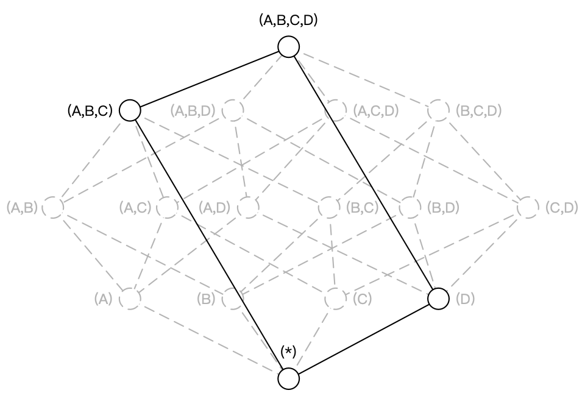

Ch06-Kylin 之 剪枝优化
June 29, 2021
Kylin 剪枝优化
如图所示，构建一个 4 个维度（A，B，C, D）的 Cube，需要生成 16 个 Cuboid。
随着维度数目的增加 Cuboid 的数量会爆炸式地增长，不仅占用大量的存储空间还会延长 Cube 的构建时间。为了缓解 Cube 的构建压力，减少生成的 Cuboid 数目，占用存储空间，同时提高查询性能，Apache Kylin 引入了一系列的高级设置，帮助用户筛选出真正需要的 Cuboid。这些高级设置包括聚合组（Aggregation Group）、联合维度（Joint Dimension）、层级维度（Hierachy Dimension）和必要维度（Mandatory Dimension）等。
1. 聚合组 (Aggregation group) #
用户根据自己关注的维度组合，可以划分出自己关注的组合大类，这些大类在 Apache Kylin 里面被称为聚合组。上面的例子如果用户仅仅关注维度 AB 组合和维度 CD 组合，那么该 Cube 则可以被分化成两个聚合组，分别是聚合组 AB 和聚合组 CD。如图所示，生成的 Cuboid 数目从 16 个缩减成了 8 个。
2. 必要维度 (mandatory dimension) #
用户有时会对某一个或几个维度特别感兴趣，所有的查询请求中都存在 group by 这个维度，那么这个维度就被称为必要维度，只有包含此维度的 Cuboid 会被生成。假设维度 A 是必要维度，那么生成的 Cube 如图所示，维度数目从 16 变为 9。即必须同时都出现。
3. 层级维度 (hierarchy dimension) #
基于 ABCD 四个维度的场景，假设维度 A 代表国家，维度 B 代表省份，维度 C 代表城市，那么 ABC 三个维度可以被设置为层级维度，生成的 Cube 如图所示，Cuboid 数目从 16 减小到 8。即可同时出现，也可不同时出现，若出现那么出现的顺序必须跟层级维度的顺序保持一直。
4. 联合维度 (Joint dimension) #
将维度 A、B 和 C 定义为联合维度，Apache Kylin 就仅仅会构建 Cuboid ABC，而 Cuboid AB、BC、A 等等 Cuboid 都不会被生成。即要么都不出现，要么都出现。
